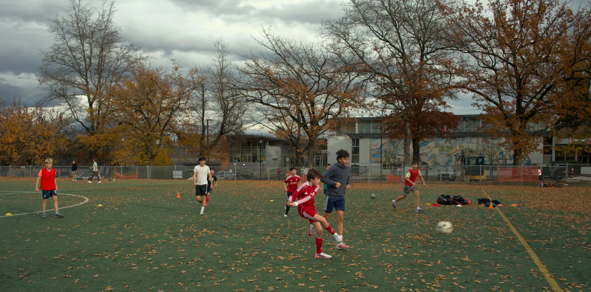
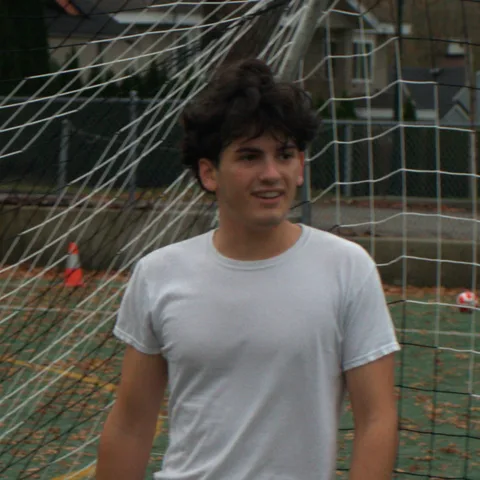

Valentinos Dinglis
Kitsilano head coach with 30+ years of experience and over 3,000 players coached in Vancouver.

Star Soccer runs weekly group training for players ages 6–14 in Kitsilano. Beginners and experienced players train in age-appropriate groups, building ball control and decision-making through technical practice, game-like challenges and individual feedback.
Choose a group by age and day at Connaught Park or Kitsilano Turf. Wednesdays are for ages 9–14, Thursdays and Sundays for ages 6–9, and Fridays for ages 6–12.
View weekly training groupsKitsilano head coach with 30+ years of experience and over 3,000 players coached in Vancouver.
TSS coach with 6+ years of experience developing competitive players.
Former AEK Larnaca Academy player with 6+ years of coaching experience.

Star Soccer alumnus who trained here from ages 8–14.
Tuesdays, 9:30–11:00 AM at Fen Burdett Stadium with Valentinos Dinglis. $20 per drop-in. We confirm your place by email.
Your child might practise controlling a pass, then try it with a defender nearby. The coach helps them spot an open teammate and decide where to play the ball next.
How our sessions workAges 5–14 at Kitsilano Turf. Choose a morning, afternoon or full day.
See winter camp datesGood to know before you register
Youth weekly groups are for ages 6–14, with a specific age range for each session. Winter camps welcome ages 5–14. We also offer Women’s Soccer Training in North Vancouver on Tuesdays. Choose the right weekly group or see the winter camps.
Yes. Players of different experience levels are welcome. Choose “New to soccer” or “Not sure yet” when registering so the coaches have useful context.
Youth drop-ins are $25–$30 per player, depending on the group. Four-session passes are $80–$95 per player. Tuesday women’s soccer is $20 per session. All prices are in CAD. The weekly schedule shows the exact price, ages, time and venue for each group.
Your child’s name and age, a parent email and a quick experience choice. For a pass, the next session is selected as your start date; you can change it before registering. The team checks space and sends your confirmation with payment instructions. Drop-in confirmations include attendance buttons; pass confirmations list your four dates. A form receipt alone does not reserve a place.
Yes. Use the private coaching form to choose your group size and session length, see an estimate and share your player’s ages. Preferred coach, availability and goals are optional.
Start with Star Soccer
Explore age-group training or speak with our coaches about private sessions.
Loading football news…
No football news from the past seven days.
Scores from TheSportsDB, OpenLigaDB (ODbL), and International Football Results. Award dates and winners from Wikidata.
Archival photos, resized and cropped for display.
.jpg){kind=link}


.jpg){kind=link}